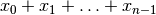
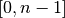

6. Local search: the job-shop problem
We enter here in a new world where we don’t try to solve a problem to optimality but seek a good solution. Remember from the sub-section Complexity theory in a few lines that some problems[1] are hard to solve. No matter how powerful our computers are[2], we quickly hit a wall if we try to solve these problems to optimality. Do we give up? Of course not! If it is not possible to compute the best solutions, we can try to find very good solutions. Enter the fascinating world of (meta-)heuristics and local search.
Throughout this chapter, we will use the job-shop problem as an illustrative example. The job-shop problem is a typical difficult scheduling problem. Don’t worry if you don’t know anything about scheduling or the job-shop problem, we explain this problem in details. Scheduling is one of the fields where constraint programming has been applied with great success. It is thus not surprising that the CP community has developed specific tools to solve scheduling problems. In this chapter, we introduce the ones that have been implemented in or-tools
| [1] | Actually, most interesting problems! |
| [2] | But watch out for the next generations of computers: molecular computers (http://en.wikipedia.org/wiki/Molecular_computer) and computers based on quantum mechanics (http://en.wikipedia.org/wiki/Quantum_computer)! |
Overview:
We start by describing the job-problem, the disjunctive model to represent it, two formats to encode job-shop problem instances (JSSP and Taillard) and our first exact results. We next make a short stop to describe the specific primitives implemented in or-tools to solve scheduling problems. For instance, instead of using IntVar variables, we use the dedicated IntervalVars and SequenceVars.
After these preliminaries, we present local search and how it is implemented in the or-tools library. Beside the job-shop problem, we use a dummy problem to watch the inner mechanisms of local search in or-tools in action:
We minimize  where each variable has the same domain . To complicate things a little bit, we add the constraint.
Once we understand how to use local search in or-tools, we use basic LocalSearchOperators to solve the job-shop problem and compare the exact and approximate results. Finally, to speed up the local search algorithm, we use LocalSearchFilters for the dummy problem.
Prerequisites:
- Basic knowledge of C++.
- Basic knowledge of Constraint Programming (see chapter Introduction to constraint programming).
- Basic knowledge of the Constraint Programming Solver (see chapter First steps with or-tools: cryptarithmetic puzzles).
- Basic knowledge about how to define an objective function (see section An implementation of the first model).
- Section Basic working of the solver: the search algorithm helps but is not mandatory.
Files:
You can find the code in the directory documentation/tutorials/cplusplus/chap6.
The files inside this directory are:
- Makefile.
- jobshop.h: This file contains the JobShopData class that records the data for job-shop problem instances. This file is used throughout all the job-shop examples.
- report_jobshopdata.cc: a simple program to report the content of job-shop problem instances in JSSP or Taillard’s formats.
- abz9: a job-shop problem instance in JSSP format.
- 20_5_01_ta001.txt: a job-shop problem instance in Taillard’s format.
- first_example_jssp.txt: our first example in JSSP format.
- jobshop.cc: A basic exact implementation of the disjunctive model with IntervalVar and SequenceVar variables.
- dummy_ls.cc: A very basic example to understand the API of Local Search in or-tools.
- jobshop_ls.h: two basic LocalSearchOperators for the job-shop problem.
- jobshop_ls1.cc: A basic implementation of Local Search with the SwapIntervals LocalSearchOperator.
- jobshop_ls2.cc: A basic implementation of Local Search with the ShuffleIntervals LocalSearchOperator.
- jobshop_ls3.cc: A basic implementation of Local Search with both the SwapIntervals and ShuffleIntervals LocalSearchOperators. We use also local search to find an initial solution.
- dummy_ls_filtering.cc: The basic example extended with filtering.
The files of this chapter are NOT the same as the ones in the example directory even if they were inspired by them. In particular, job-shop instances with only one task per job are accepted (not that this is extremely useful but...).
Content:
- 6.1. The job-shop problem, the disjunctive model and benchmark data
- 6.2. An implementation of the disjunctive model
- 6.3. Scheduling in or-tools
- 6.4. What is local search (LS)?
- 6.5. Basic working of the solver: Local Search
- 6.6. Local Search Operators
- 6.7. The jobshop problem: and now with local search!
- 6.8. Filtering
- 6.9. Summary
Google or-tools |